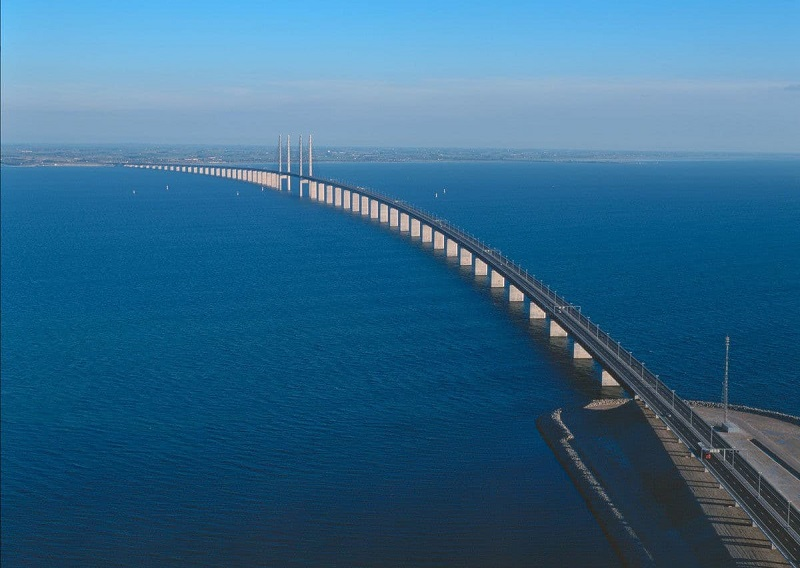

VÒNG QUANH VIỆT NAM

Chào mừng đến với Nha Trang!
Thành phố biển của tỉnh Bình Định, thuộc khu vực duyên hải Nam Trung Bộ, cách Hà Nội 1.065 km, cách TP HCM 650 km. Quy Nhơn nép mình giữa một bên biển một bên núi với những bờ biển dài uốn cong thơ mộng, bờ cát vàng mịn và làn nước trong xanh đẹp mê hồn.
Quy Nhơn mùa nào đẹp?
Mùa mưa chỉ kéo dài 2-3 tháng cuối năm, thời gian còn lại trong năm tiết trời khô ráo, đặc biệt khoảng thời gian tháng 3-9. Mùa hè từ tháng 5 đến 9 nắng nhưng không oi bức, khó chịu, không bị ảnh hưởng mưa bão nên thích hợp để du khách tham gia các hoạt động vui chơi, giải trí cả trên bờ lẫn dưới biển.Các địa điểm bạn có thể đến chơi như:
Chơi đâu?
Cầu Thị Nại nối liền giữa thành phố Quy Nhơn và Nhơn Hội – một khu kinh tế sầm uất. Nhìn từ trên cao, cây cầu trăng trắng bắc ngang qua dòng nước xanh biếc, một đầu là đất liền, còn 1 bên là đảo Phương Mai với phong cảnh đồi cát rộng lớn, hoang sơ nhưng lại rất trữ tình.

Mộ Hàn Mặc Tử được đặt trong một khoảng đất rộng rãi, bằng phẳng với thảm cỏ xanh mướt, mềm mại, không gian thoáng đãng và xung quanh là những cây cổ thụ tươi tốt tỏa bong râm quanh năm, mang đến cảm giác thân thiện cho khách tham quan.
Khu dã ngoại Trung Lương Thuộc thôn Trung Lương, xã Cát Tiến, huyện Phù Cát, khu dã ngoại này là một trong những điểm đến yêu thích nhất của giới trẻ. Bên trong khu dã ngoại gồm nhiều khu vực như cắm trại, ngủ nhà lều, bãi tắm và chơi các trò dưới biển, nhà hàng, quán cà phê, cổng trời check-in... Được chăm chút trồng thêm cây cảnh và hoa kết hợp vị trí và phong cảnh đẹp vốn có của các núi đá, bãi biển xung quanh, khu dã ngoại rất hợp để du lịch theo nhóm bạn bè hoặc gia đình.
Eo Gió nơi có con đường đi bộ ôm theo sườn núi và view biển đẹp ngoạn mục. Khi tham quan con đường bộ du khách dư thời gian nên ghé qua Tịnh xá Ngọc Hòa, Linh Phong Sơn Tự...
.jpg)